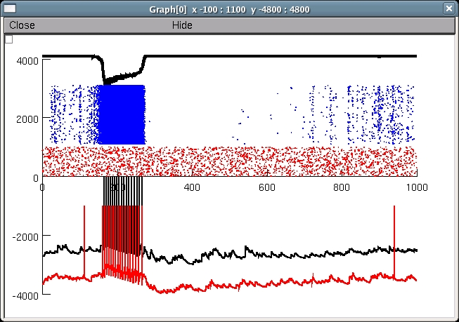

This is the readme for the model for
Lytton WW; Omurtag A. Tonic-clonic transitions in computer
simulation. J Clinical Neurophys, 24:175-181, 2007.
PMID: 17414973
Usage Notes:
To recreate Fig. 4: (will likely only run under unix); after
installing a version at least as recent as NEURON -- Release 6.1.1
(1894) 2007-11-24 (version displayed when you start nrngui) type the
following:
nrnivmodl
nrngui batch_.hoc
In under 2 minutes (on 2.8GHz Pentium 4) a display shows Expressor
Field at top (black) Expressor (blue) and Driver (red) rasters 2
Expressor voltage traces at bottom y-axis is arbitrary except for
rasters:

This version recreates the connectivity matrix with different seeds
and is therefore not identical to the original (I was not being
careful with seeds at the time since I was storing the connectivity)
in addition to the graph, a panel is launched that allows you to look
at several other voltage traces that were recorded during the run
Changelog
---------
2022-05: Updated MOD files to contain valid C++ and be compatible
with the upcoming versions 8.2 and 9.0 of NEURON.